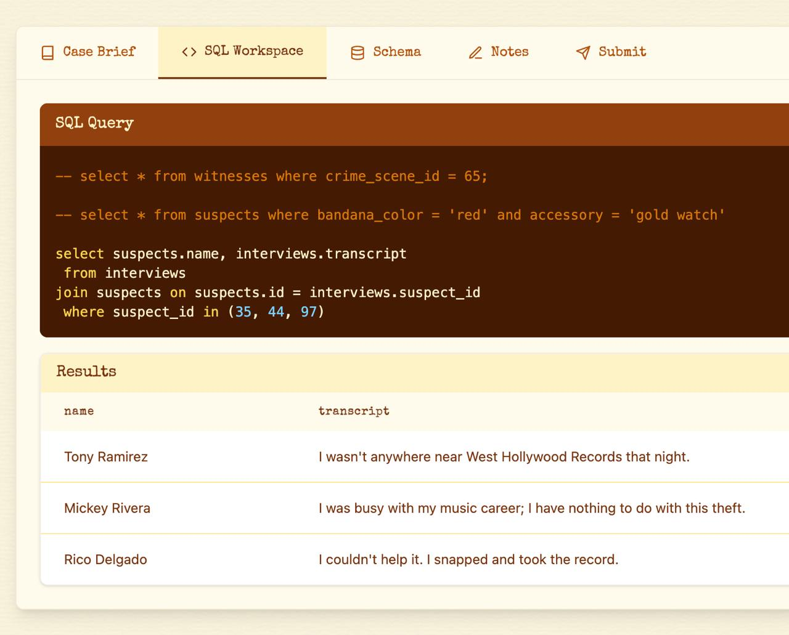

Страница 5
Нейронка пишет код, как стажёр
posted on 2025-04-09

Нейронка пишет код, как стажёр. Ленивый стажёр.
Помните, недавно я написал радостный пост про то, как с помощью нейросети сделал за час новую библиотеку для роутинга урлов, почти как в Django? Затем я потратил ещё пару часов на эксперименты с рефакторингом кода и дополнением тест-кейсов - тоже с помощью нейросети Claude 3.7 конечно. Только в этот раз использовал не Roo Code, в Aider и плагин для подключения его к Emacs.
Нейронка уже пишет на Common Lisp лучше стажера
posted on 2025-04-05
Сейчас за час, не написав ни строчки кода сделал такую библиотеку:
https://github.com/40ants/routes/pull/1/files
там и тесты есть с документацией.
Несколько слов о Zettelkasten и том как я веду заметки
posted on 2025-03-24
Сегодня один из коллег во внутренней соцсети упомянул зеттелькастен и описал то свой способ ведения заметок в Sublime Text. У него довольно системный подход к тому, как заметки должны быть структурированы.
Чем может быть полезен Yandex Workflow?
posted on 2025-03-18
Как рассказывал недавно, в последнее время смотрю разные вебинары от университета Зерокодер. И вот в одном из них показывали как бот работает в связке нескольких конструкторов:
- Puzzlebot – в нем задавались разные команды бота
- При определенной команде управление передавалось в Make.com, где был описан workflow по которому вызывался OpenAI с определенными промптами и бот таким образом обрабатывал произвольный текст от пользователя, отвечая текстом, сгенерированным с помощью ИИ.
Я очень люблю учиться
posted on 2025-03-14
Я очень люблю учиться. Каждый день нахожу что-то новое!
Чему научился на этой неделе?
Посмотрел парочку уроков по SEO - понял как и зачем собирать слова для семантического ядра и как их потом кластеризовать.
Сжатый курс про использование нейросетей для программирования на...
posted on 2025-03-14

Сжатый курс про использование нейросетей для программирования на Python
Тема не совсем про lisp, но я тут последнее время смотрю много вебинаров университета Zerocoder и сегодня они прислали рекламку нового миникурса про использование нейросетей для создания продвинутого Python бота, на который можно попасть бесплатно, если успеешь в первую 1000 откликнувшихся.
Как играючи изучить SQL?
posted on 2025-03-11

Сегодня случайно наткнулся на проект, в котором предлагается изучать SQL в виде игры в детектива. Проект называется SQL Noir.
Бот-учитель по Python
posted on 2025-03-02

В описании канала 40Ants сказано, что я верю в то, что в мире всё связано и не бывает случайностей. Или, как говорил О.Ж. Грант в фильме "Автострада 60": "Если что-то произошло, оно было неизбежно."
Как учить неправильные глаголы с помощью нейросети?
posted on 2025-03-02

В прошлом посте я писал про универ Зерокодер и то как их вебинар мне открыл глаза на использование нейросетей. Так вот на прошедшей неделе я прошел их интенсив по созданию чатботов на основе ИИ на одном из уроков которого увидел ещё один интересный кейс.
Продолжение про нейросети и умный дом
posted on 2025-03-01

Недавно я решил погрузиться в тему умного дома, вдохновившись интенсивом по нейросетям от Зерокода. Этот курс открыл мне глаза на то, как много задач можно решать с помощью нейросетей — от создания ботов до разработки веб-сайтов. И я подумал: а почему бы не использовать нейросети для проектирования умного дома? В прошлом посте я лишь намекнул на эту идею, а теперь готов рассказать, что из этого вышло.
Created with passion by 40Ants